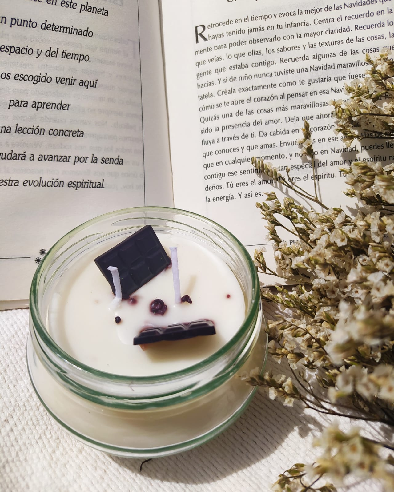
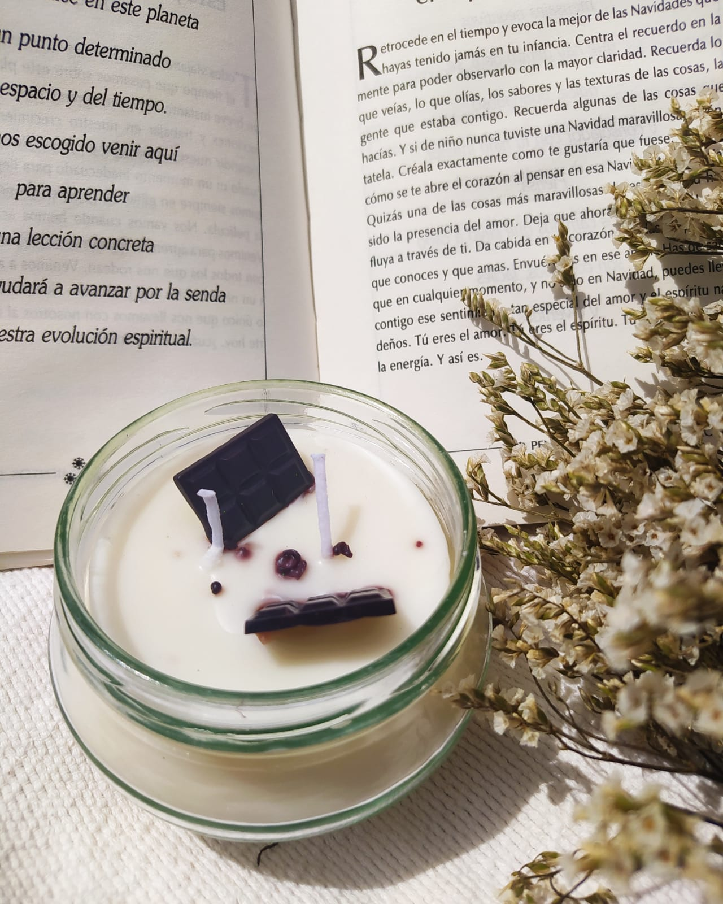

Productos
Aromatizante

Velas

Galería

 



Conócenos
¿Qué es Semillas?
Semillas es el resultado de un proyecto creado con mucho amor, un producto artesanal y de alta calidad, nuestro producto principal son las velas, hechas con ceras amigables con el medio ambiente, , pero poco a poco hemos explorado otros productos para darles a nuestros usuarios
¿Cómo nació este proyecto?
Semillas nace en el calor de nuestro hogar, nuestra primera vela fue hecha en nuestra cocina con un stock limitado de productos, apenas explorando lo que queríamos lograr, fueron meses de pruebas y errores en los que cada día nos sentíamos más felices de estar llegando a el producto que queríamos ofrecerles, comenzamos a manejar ceras que fueran amigables con el medio ambiente, que redujeran ese impacto que vamos dejando en el mundo, a hoy 2021 tan solo llevamos un año en el mercado, lanzamos nuestra marca en medio de una pandemia y eso implicó un gran reto, llegar a las personas solo por redes sociales, y las recomendaciones de aquellos que iban haciendo parte de nuestros resultados, pero es gratificante saber que cada persona que compra nuestras velas regresa feliz buscándonos de nuevo.